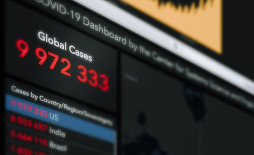

A few things
about me
Hi there! I am a self-taught Data Analyst ready to take on the world with my new skills. I have a background in
Digital/eCommerce/SaaS and thanks to these experiences I discovered my fascinination for data, the power it has and
the stories it can tell.
If I am not in front of my computer teaching myself new data skills or brainstorming for interesting projects,
you can find me working on a crochet or knitting project, doing some yoga, taking a walk in nature or spoiling my cat (a.k.a. "the bestest boi").
Below are some projects I have been working on.

The final project of the Google Data Analytics Certificate. Analysis of bike user behaviour to make recommendations for a marketing campaign using R.
Exploring Covid-19 data from ourworldindata.org using SQL Server.

Visualisation of Covid-19 data (from previous data exploration project) in Tableau Public dashboard.
Looking at Nashville Housing data from Kaggle (modified) using SQL Server. Date formatting, filling Null values, removing duplicates.